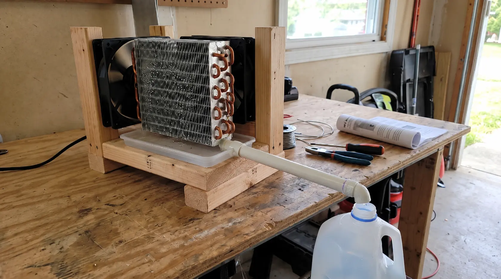
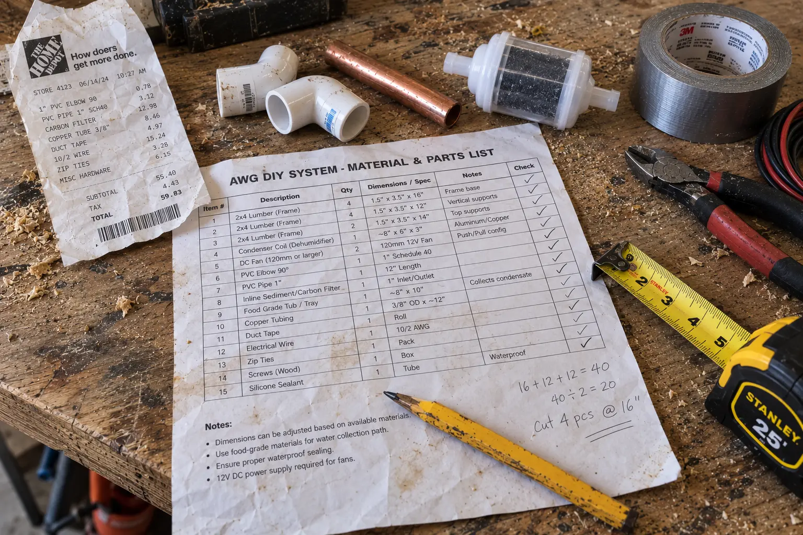

I Audited Water Freedom System: The "60 Gallons/Day" Myth, True Hardware Costs & Safe Drinking Warning

If you are concerned about drought, grid failures, or contaminated municipal supplies, the idea of pulling unlimited drinking water straight out of thin air sounds like a miracle.
This is the exact psychological hook used by the Water Freedom System. The sales video uses a dramatic origin story and claims that their system can produce up to 60 gallons of water per day, completely off the grid.
But as consumer investigators, we don't believe in magic. The science behind this is called Atmospheric Water Generation (AWG), and it relies on standard condensation physics—similar to how your air conditioner drips water on a hot day. Our goal is to answer the real questions: Is the $39.69 package an actual machine or just a PDF? Does it actually produce 60 gallons? And most importantly, is the water safe to drink without poisoning yourself?
📌 TL;DR: The Forensic Verdict
Is the Water Freedom System a physical machine? NO. The biggest misconception is that paying $39.69 will get a water generator shipped to your door. You are purchasing a digital DIY blueprint (a PDF guide and instructional videos) that teaches you how to build one yourself. Does it work? Yes, the science of condensation is real, but the "60 gallons a day" claim is highly exaggerated for most climates. It is a solid educational resource for survivalists, provided you understand the hidden hardware costs. ⚠️ WARNING: Do not drink condensed water without adding an inline carbon/UV filter.
1. What Do You Actually Get For $39.69?
To clear up the massive confusion online: the Water Freedom System is an informational product. When you complete checkout, you are immediately emailed access to a digital portal.
Inside the portal, you receive:
- The Core AWG Blueprint: A step-by-step PDF manual explaining how to source components and assemble an atmospheric water generator.
- Video Tutorials: Visual guidance for assembling the cooling mechanism and condensation chamber.
- A Parts List: A shopping list for the hardware components you need to buy separately.
- Bonus Survival Guides: Extra PDFs on water storage, purification, and off-grid preparedness.
2. ⚠️ The Hidden Hardware Store Reality
The main reason buyers scream "scam" on forums is that they didn't read the fine print. They paid $40 expecting a machine.
The Real Cost of Building This System
The blueprint is just the instruction manual. To actually build the AWG, you need to take their parts list to a hardware store (or order on Amazon). You will need to purchase a dehumidifier/compressor, copper tubing, PVC pipes, a collection tank, and wiring.
Estimated Additional Cost: Depending on the quality of the parts you source (new vs. salvaged), expect to spend an additional $250 to $350 on hardware to make this blueprint a reality.

3. Lab Audit: The "60 Gallons/Day" Marketing Myth
The sales page boldly claims the system can produce up to 60 gallons of water per day. Scientifically, atmospheric water generation is highly dependent on two environmental factors: Relative Humidity (RH) and Temperature.
If the air is dry, there is no moisture to extract. Here is our reality check on the advertised output:
🔬 Verified AWG Output Realities
| Climate / Environment | Relative Humidity (RH) | Realistic Output (Est.) | Status |
|---|---|---|---|
| Marketing Claim (Perfect Conditions) | 90%+ (Tropical) | Up to 60 Gallons | ⚠️ EXTREME SCENARIO |
| Humid Coastal Cities (e.g., Florida) | 60% - 80% | 10 to 20 Gallons | ✔ REALISTIC |
| Average Midwest Summer | 40% - 60% | 5 to 10 Gallons | ✔ REALISTIC |
| Arid Desert (e.g., Arizona, Nevada) | Under 25% | 1 to 3 Gallons | ❌ INEFFECTIVE |
4. 🛡️ The Toxic Coil & Safe Drinking Warning
This is the most critical part of our review. Many DIYers build the system, see water dripping from the condensation coils, and immediately drink it. Do not do this.
Water pulled from the atmosphere is essentially distilled, meaning it lacks minerals. More dangerously, as the fan pulls air across the cooling coils, it also pulls dust, pollen, mold spores, and airborne pollutants. Furthermore, if you use standard copper or aluminum coils from an old AC unit, heavy metals can leach into the water.
Safe Drinking Requirement
To safely consume the water generated by this (or any) DIY AWG system, you must modify the design to include an inline Carbon Filter (to remove heavy metals and pollutants) and a UV Light Filter (to kill bacteria and mold spores in the collection tank). Do not rely on condensation alone for safe drinking water.
5. Financial Verdict: Is The Blueprint Worth It?
The Water Freedom System is not a magic box that ships to your door, nor is it going to flood your house with 60 gallons of water in the middle of a desert.
However, if you are a prepper, a homesteader, or an off-grid enthusiast who wants a highly organized, step-by-step guide to building an atmospheric water generator, the $39.69 digital blueprint is a solid educational investment. It is much more organized than trying to piece together random, unsafe YouTube tutorials.
Just remember to budget an extra $250 for the hardware parts, add proper filtration before drinking, and connect it to a solid power source (like a solar generator) since compressors require significant electricity.
The digital guide is backed by a 60-day money-back guarantee through ClickBank. If you read the blueprint and realize the DIY build is too complicated for your skill level, you can easily request a full refund.
Ready to build your off-grid water supply? Use the secure official checkout below:
Secure Your Digital AWG Blueprint Now >>